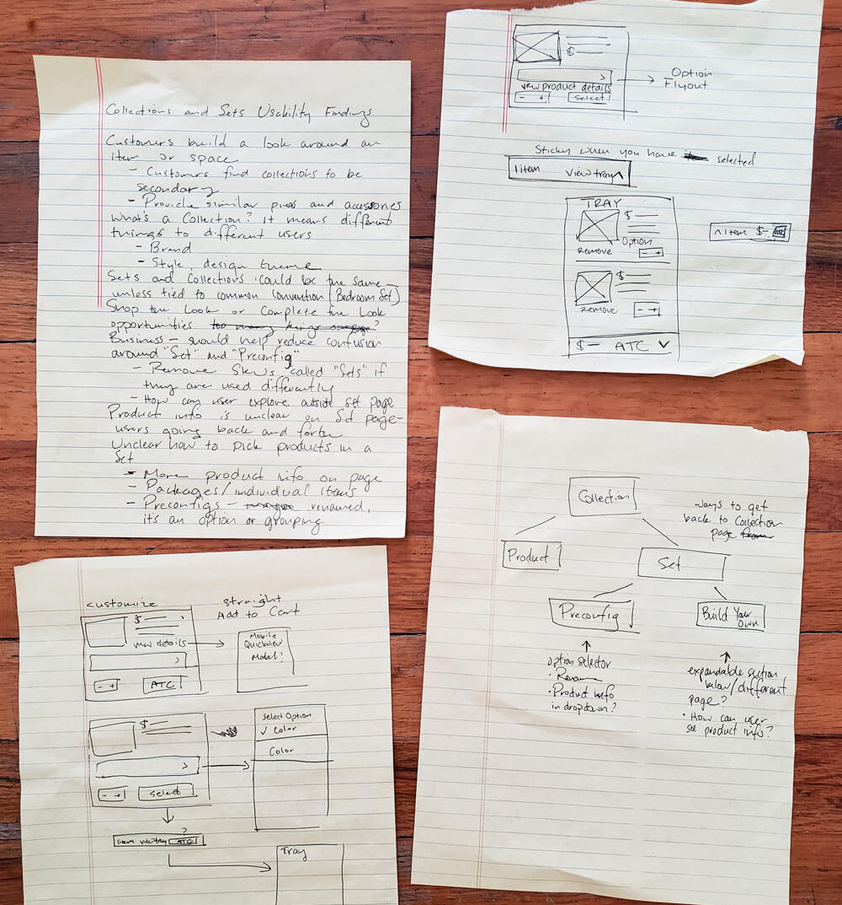
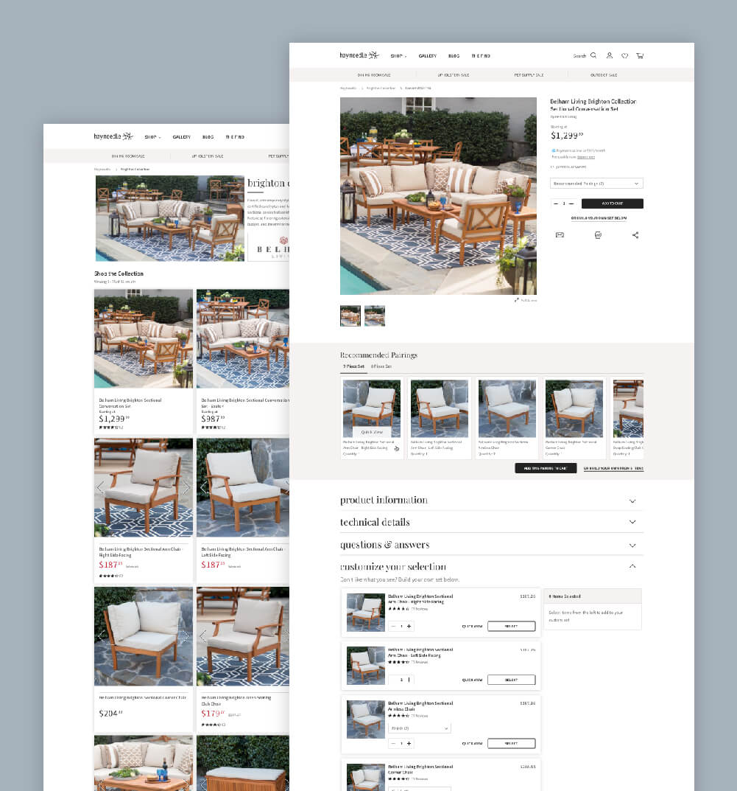
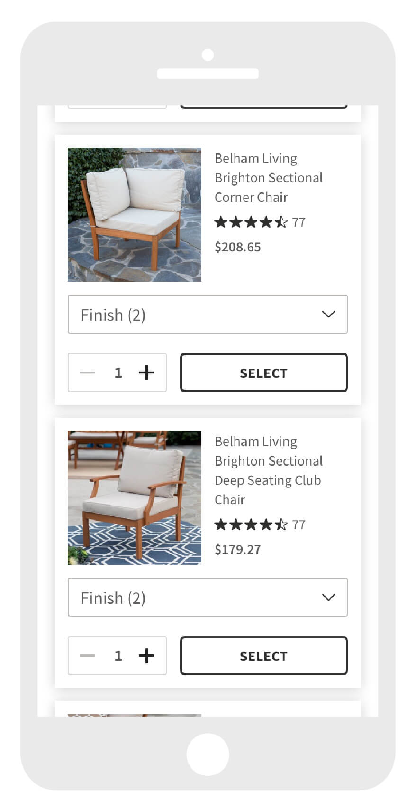
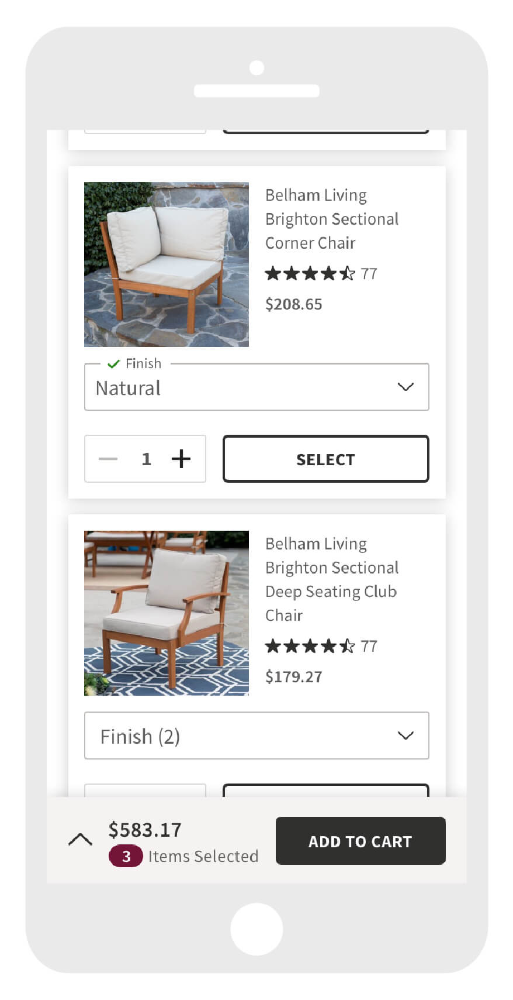
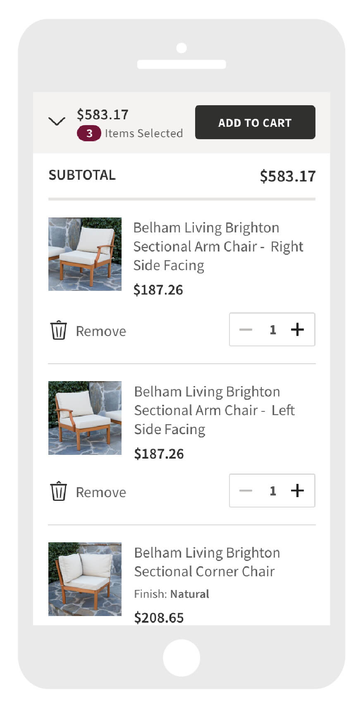

Hayneedle's collections and sets pages were being ported to a new platform. While the project scope limited potential enhancements, the team used this as an opportunity to improve a confusing experience. From past user research, we knew that clear product information and a simple user flow was key. This project was an initial springboard towards a more intuitive experience, with a comprehensive overhaul planned for later in 2019.

Goals
Improve user understanding of Hayneedle sets and collections, allowing them to find relevant items more easily
Provide clearer product information so users know what they are selecting
Empower users to customize their own product selection
Mobile and tablet optimization
Align UI with current product page and updated design system
Understand
Requirements gathering, reviewing usability test findings, competitive review, data & insights analysis
Ideate
further note and requirements gathering, sketching, diagraming activities
Prototype
Low and high fidelity mocks, Invision prototype, covering all scenarios needed for development

Challenges
Business rules made this project a challenge. The terms "set" and "collection" have completely different meanings to product specialists and customers. Reworking the verbiage to make sense to the user was crucial and I think there's still some work to do there.
The organization of information on these pages was also important. Due to the project scope, we could not make huge changes to the way Hayneedle collections were structured. We needed to illustrate how a set of products fit within a collection and the user’s ability to build their own set.

Build your own selection

Choose option from dropdown of desired item and select

Expand the bottom sheet to view selected items
Learnings
Seek feedback early and know the full scope upfront. In hindsight, I would love the opportunity to enhance these pages further. I think eliminating sets pages and customizing from the collections pages would be an interesting option to explore, since users don't differentiate between the two. Additionally, I found that diagraming and quickly drawing my ideas help me a ton, and often my ideas come to me in the middle of the night.